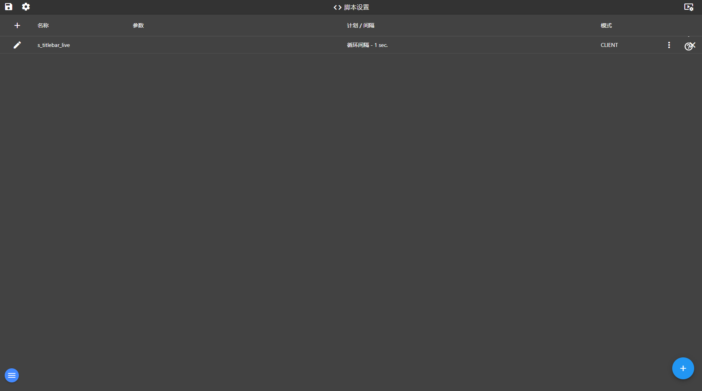

14. 脚本与调度
入口：菜单「系统」→ 脚本，或 /scripts
功能概述
脚本模块用 JavaScript 扩展平台：CLIENT 脚本在浏览器里跑（可改画面、算值），SERVER 脚本在服务端跑（可周期读写点位、发通知）。
界面说明

脚本与调度（当前交付版实际截图）
界面上真实可见的元素（按当前交付版实测）
| 区域 | 实际内容 |
|---|
| 按钮 / 图标 | 保存项目、编辑项目、视频墙、视频监控、传感器标定、开诚智枢帮助、add、edit、more_vert、clear |
| 列表表头 | add、名称、参数、计划 / 间隔、模式 |
| 当前列表行数 | 1 行（真实数据，截图同版） |
逐步操作
- 进脚本页点“添加”，填名称、模式（CLIENT/SERVER）与代码。
- 需要周期执行时设置调度（间隔或指定星期/时刻）。
- 保存后在列表里启用；SERVER 脚本会按调度自动运行。
- 调试：在脚本里写 console 输出，或临时把调度设为秒级观察效果。
- 示例：本交付包内置 s_titlebar_live，用 CLIENT 脚本把值班人与真实时钟写进首页标题栏。
常见问题
- 脚本没执行？检查调度是否启用、模式是否选对。
- CLIENT 脚本带参数时不生效——这是平台的已知限制（代码里已标注 TODO）。
- 脚本能访问点位吗？SERVER 脚本可用平台注入的对象读写标签。
返回目录